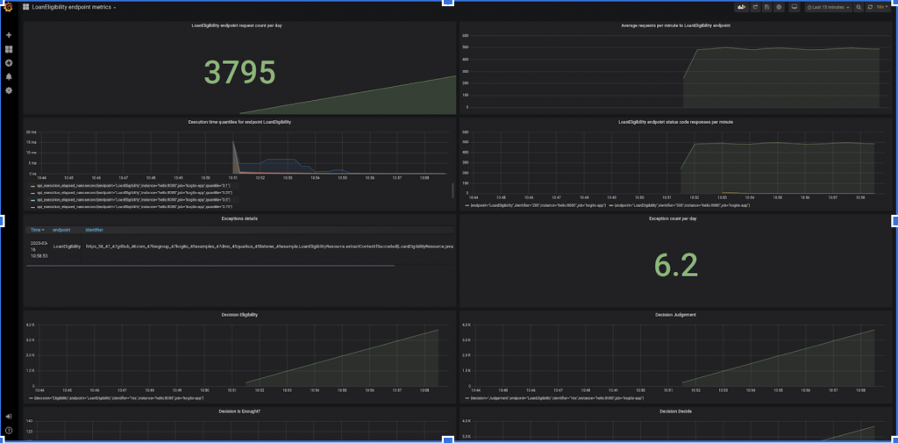
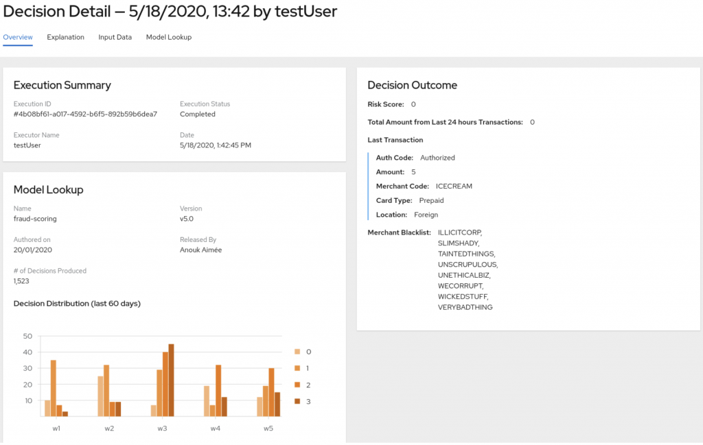
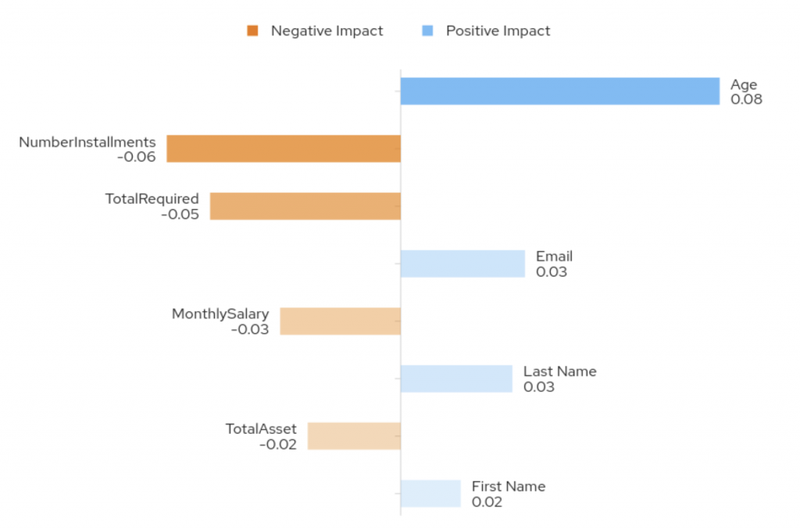

TrustyAI Aspects
As mentioned in the previous blog post we have three aspects that we are implementing: explainability, runtime and accountability. However we need to see how these are connected with the use cases and personas.
The first aspect we will consider is runtime tracing and monitoring. The term monitoring refers to the system overseeing performance or decision behaviour in real-time. Tracing refers to the historical data and queries over these. For example: how many decisions have been approved over the last week.
Monitoring and tracing applications at runtime is fundamental to enable auditing. Auditing enables a compliance officer to trace the decision making of the system and ensure it meets regulations.
The second aspect of TrustyAI is explaining machine learning predictive models so that the model outcomes can be trusted. This helps the data scientist to ensure unbiased and trusted models. Bias in ML systems is currently a huge problem with examples such as Google’s photo recognition, recognizing people as gorillas [1]. TrustyAI’s aims to leverage the explainability of the system to avoid model bias and unfair decisions, preserving company’s reputation and mitigating risks of litigation.
The third aspect of TrustyAI is auditing and accountability. This will help to increase compliance throughout the organization, by using auditing data to ensure that company rules and regulations have been met. The compliance officer will audit the system to review the requirements and the development of the system.
The use case covers the runtime and explainability aspects of the initiative. The bank manager can track the decisions of the system over time by using the monitoring implementation shown below. It is a sample dashboard that shows the number of loans that have been rejected or accepted over a given time period. The bank manager can monitor if the system is working correctly – and the constraints are still correct. For example, over time the economy changes and this means that loan constraints may change.

The bank manager then wishes to review individual loan decisions. This can be useful when there is a dispute about a loan or if a customer wants to know how their data has been processed. The bank manager can trace the decisions that have been made in the past as they have been stored for auditing and can be queried individually as shown below.

If the system makes a prediction based on an ML model which is used to make loan decisions, then the system can present these predictions and highlight which features were used to make that decision (see below). TrustyAI services will enrich products with this explainability feature so that users can answer these questions with confidence.

TrustyAI’s aim is to enable trust in AI systems. This includes being able to use AI in business environments and critical systems. This is vital for industries such as healthcare, finance and many others. TrustyAI will enable this support by building services which include the three aspects (explainability, monitoring and auditing) mentioned in this blog post.
References
[1] https://www.wired.com/story/when-it-comes-to-gorillas-google-photos-remains-blind/